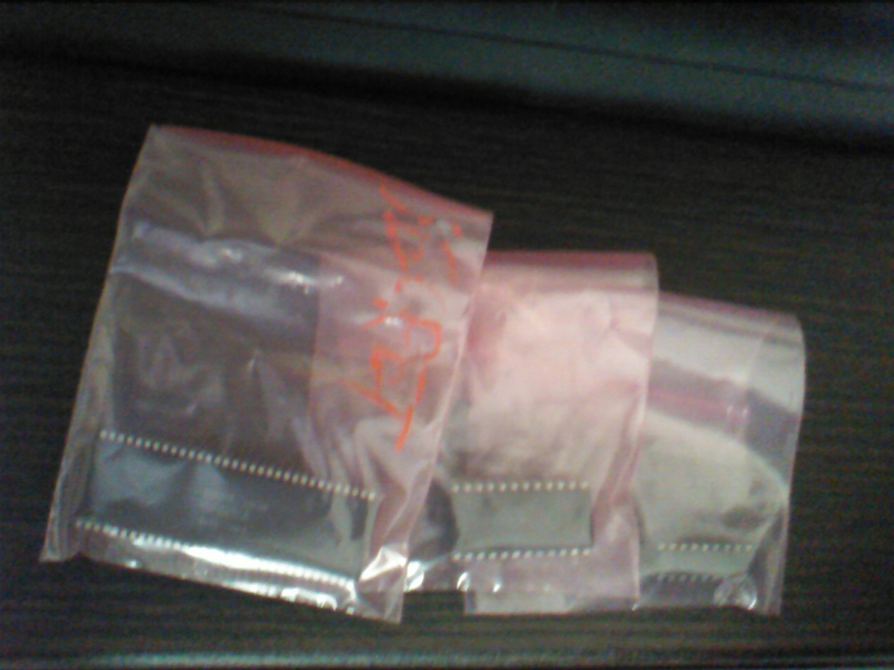

自己紹介
名前… めがゆん
学年… ２年
役職… サウンド
シュミ
漫画 … ほのぼの日常系非日常モノ（日常とか）、久米田康治作品、ジョジョ（七部途中）、ハイスコアガールを読み進めようかな〜、といったところか？
アニメ… 観ないんですね〜、これが。ラノベ、漫画原作だとどうしてもそっち先に読まないと気が済まないタイプでして…
あ、ファーストガンダムとSteins;Gate（後述）とトップをねらえ！はしっかり観ました。
ゲーム… 東方project（の世界観や演出）、Steins;Gate、あとはレトロゲームのプレイを見るくらいで最近はやろうと思うモノがあまりないです…
全体的に下手の横好きってやつですね
音楽 … 吹奏楽から入ってるので割とアナログなジャンルが好きだったりします。今はジャンルに囚われない曲作りのため勉強中です。
と、これを書きながらテラクレスタのテーマ(YM3526版)を聴いてたりするのですが。
先日都内某所で入手したFM音源チップも使ってみたいところ。

（なんと初公開です）左から、
YMF286-K（YM2610（ネオジオに入ってるやつ）互換品？情報求）
YM2612（メガドライブに入ってるやつ）
YM2413B（マスターシステムに入ってるやつ）
…です。あとYM3012っていうDACが手に入りました。
ひとこと
えーと、めがゆんです。初対面なら誰にでも敬語を使ってしまう癖があるので、なるべく固くてとっつきにくい印象を与えないよう、頑張ります！そこからかよ
ゲームに限ったことではないですが、やはり良いものは良い環境から生まれるものだと思うので、上手く雰囲気も作れたらいいなって感じですね
サウンドのお仕事もしています。質問は答えられる範囲で答えるのでどしどしどうぞ！（音楽理論は独学なので教えられるか微妙なラインですが）
申し訳ありませんがサウンド専門でゲームのプログラミング自体には疎いので他を当たって下さい…orz
まだまだ至らないことだらけですが、よろしくお願いします！